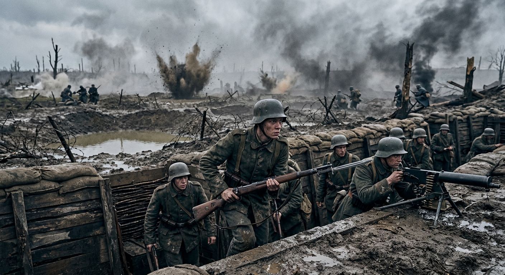
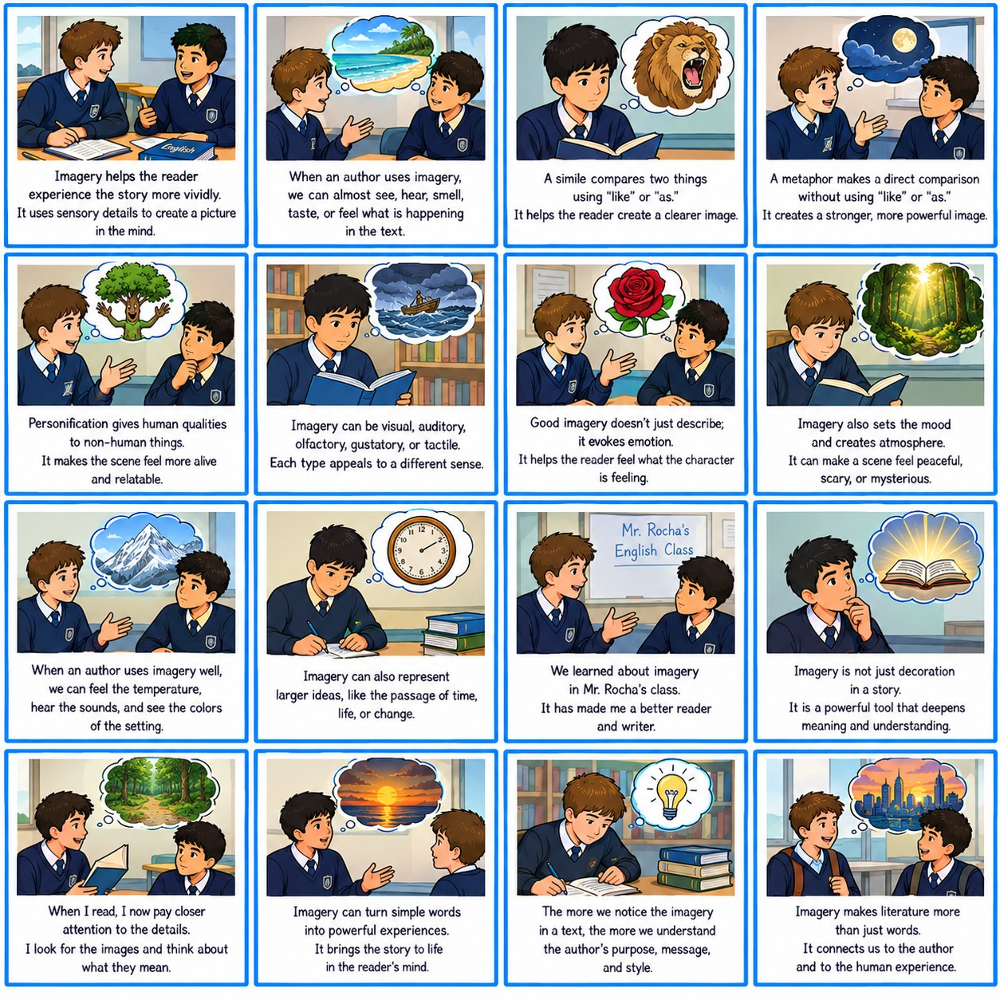

Introduction

Activity 1: Video Analysis
Watch the video. Take notes and tell Mr. Rocha what the video was about.
Activity 2: Scrambled Image
Order the parts of the image to form the complete image. Drag and drop the pieces.
Target Image

Activity 3: Conversation on Imagery
Select the correct response for Person B to complete the 18-line conversation. Choices disappear once selected!
Activity 4: Story Interpretation
Analyze the image below and tell Mr. Rocha what the story is about.

Activity 5: Reading Comprehension
Read the text about imagery in literature and answer the multiple-choice questions.
The Architecture of Perception
In the realm of advanced literary analysis, imagery transcends mere decoration; it is the fundamental architecture of narrative perception. Masterful authors employ sensory details not simply to paint a static picture, but to orchestrate a dynamic psychological experience for the reader. When we engage with a text saturated in evocative imagery, we are unconsciously adopting the cognitive framework of the protagonist, experiencing their environment with a visceral immediacy that exposition alone cannot achieve.
Consider the strategic deployment of olfactory imagery. Scent bypasses the analytical centers of the brain, linking directly to memory and emotion. A writer describing the "acrid tang of rusted iron and stagnant rain" immediately establishes a mood of decay and entrapment, implicitly foreshadowing a narrative trajectory of decline. Similarly, auditory imagery—the rhythmic cadence of a grandfather clock or the distant, discordant wail of a siren—can manipulate the pacing of a scene, creating suspense or emphasizing isolation without a single explicit statement of fear.
Furthermore, tactile imagery grounds abstract themes in tangible reality. When a character grasps a "splintered, unforgiving banister," the physical sensation mirrors a psychological struggle. The texture of the world becomes a reflection of internal states. Visual imagery, while perhaps the most ubiquitous, operates most effectively when juxtaposed. The stark contrast between "blistering, sterile luminescence" and "comforting, impenetrable obsidian shadows" forces the reader to navigate a thematic chiaroscuro, highlighting moral ambiguities or character duality.
Ultimately, imagery at the C1 level demands active synthesis. It requires the reader to decode the sensory lexicon, translating physical descriptions into thematic resonance. The truly profound literary work does not tell us what a character feels; it forces us to inhabit their sensory landscape, ensuring that the emotional resonance of the narrative lingers long after the final page is turned.
Activity 6: Sentence Structure
Drag and drop the words to form 12 complex and compound sentences about imagery (C2 level). Click the speaker icon to hear the correct sentence aloud.
Activity 7: Listen, Complete & Analyze
Listen to the audio, complete the text with the missing words (every 20th word is missing), and answer the questions.
Where Granite Keeps the Dawn
Multiple-Choice Questions
Performance Results
Student:
Date:
0%
Overall Score